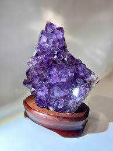
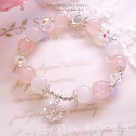

來自心靈的真實回饋
每一顆水晶都承載著一段獨特的故事，與我們分享你的感悟，讓正向能量在字裡行間流動。

王小姐
★★★★★
「自從在臥室擺放了紫水晶簇，感覺睡眠品質變好了，原本紛亂的心情也平靜許多，能量真的很神奇。」


林先生
★★★★★
「買給女友的粉晶手鍊設計非常細緻，完全不像傳統水晶那樣沉重，非常時尚！她每天都戴著，人緣也變好了。」

✨ 分享您的故事
您的感悟，或許正是他人尋找已久的指引。